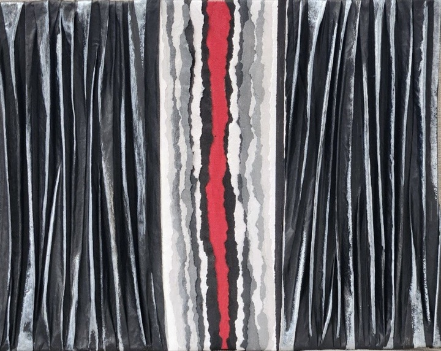
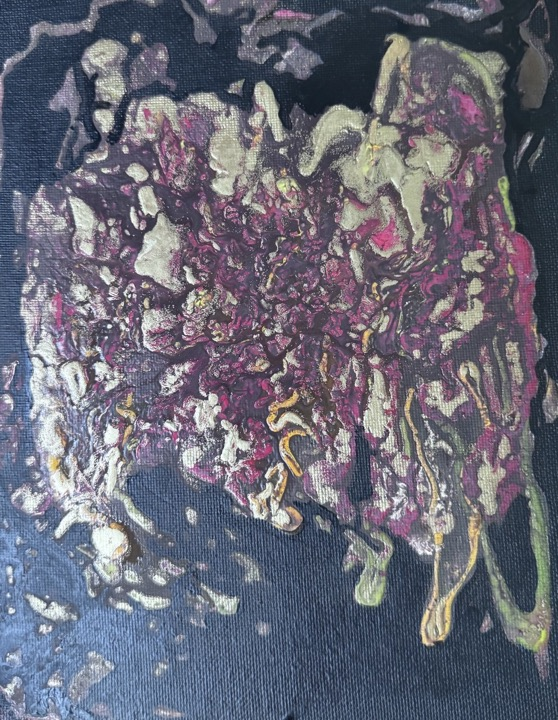
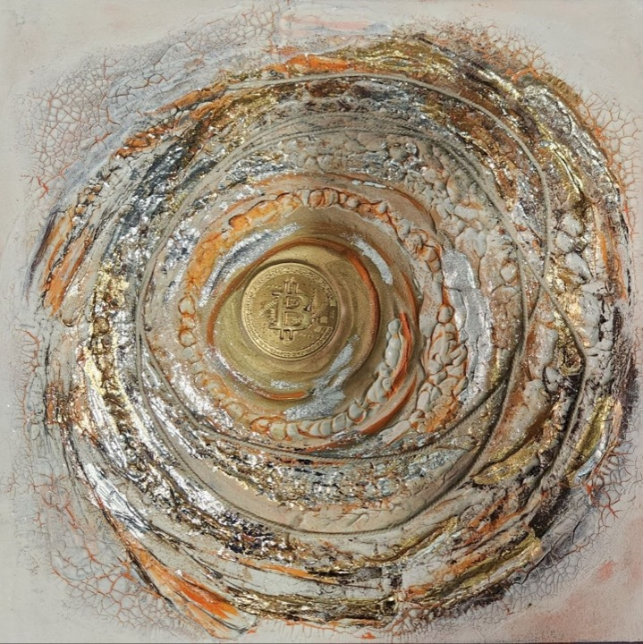
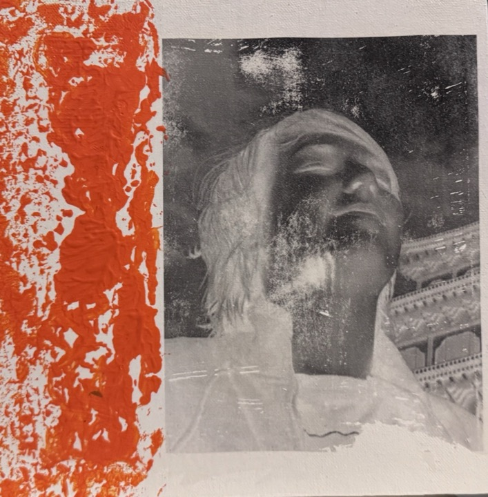
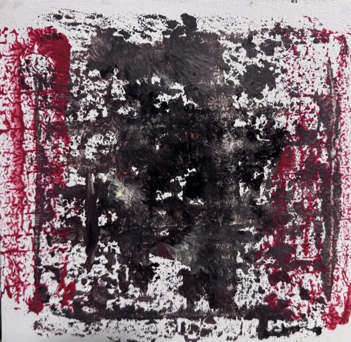
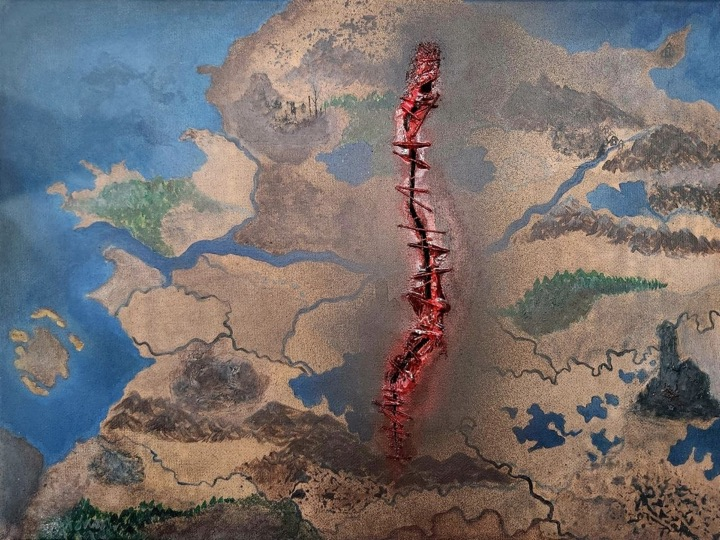

The Ruins of War
The war between Russia and Ukraine became a source of personal pain for me because I grew up believing that our peoples were close. Intertwined family histories and shared memories could not protect people from becoming estranged from one another, and their former closeness became part of a deep trauma. I find it hard to accept that people with so much in common can now see one another as enemies. The series “The Ruins of War” began with that feeling. I think about how closeness between people breaks down, what role money and power play in armed conflicts, and what happens to a person's life and memory. One question is especially important: What awaits people after the fighting stops? Does the war end, or does it live on inside them?
The paintings in the series trace a path from the emergence of estrangement to the difficulties that lie ahead for relationships after the war. In one painting, fabric divides a space that was once whole. In another, gold mixes with the color of blood, and what has been painted over cannot be uncovered, while a cut canvas will never be the same again. The thirst for wealth as a cause of war has an important place in this inquiry. The ways in which capital accumulates and circulates change, but the desire for power over resources and people remains.


The Divide
Read description
The work addresses a split within communities connected by history and family ties. Heavy folds of fabric form two enclosed spaces, and the narrow red strip between them becomes a boundary that no one can cross unchanged.
War changes the very way we see someone close to us: shared memories remain, but they cease to be a basis for trust, and a protective boundary gradually becomes a means of estrangement.



Gold and Blood
Read description
In the painting, gold and blood-red paint come together, with no clean boundary between them. War can bring wealth, territory, and influence to some while others lose loved ones and their own lives. The outward glitter of what has been gained often gives no hint of its human cost.



Orbit of Capital
Read description
The Bitcoin symbol sits at the center of a multilayered funnel, surrounded by growing layers of capital accumulation and traces of destruction.
The work examines modern forms of accumulation in which capital can move between jurisdictions and change hands, while the distance between a financial decision and its human consequences grows. The motionless symbol of digital wealth becomes the center of tense movement. The subject here is not cryptocurrency itself, but the lure of power that promises freedom from borders and responsibility.



Unlived Life
Read description
A human figure disappears beneath layers of paint. Individual features show through the surface, preserving the presence of someone whose full likeness can no longer be seen.
The work is dedicated to the children of war, whose lives were forcibly changed. War destroys people not only physically; it gradually erases their dreams, plans, and sense of their own future. The future they could have lived but that will never come to pass.



No One to Tell
Read description
During war, families disappear and homes, photographs, and letters are destroyed. Along with them go the stories of people whom no one is left to remember. Loss is complete when, after a person dies, the last evidence of how they lived disappears.
The painted surface preserves scattered traces of a face. In it, you can sense the presence of a life brought to a halt, but you can no longer tell whose face it was.



A World That Hurts
Read description
A roughly cut canvas bearing a map, rough, uneven stitches through living tissue. The seam joins the edges, but each stitch makes a fresh puncture that hurts. Even after the war ends, rebuilding relations between peoples is a deep, lingering ache, and every attempt to draw closer brings back memories of loss.
The seam holds the torn pieces together without restoring their former wholeness, and the ragged seam remains part of the new whole.